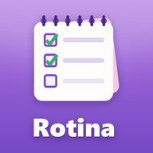

<!doctype html>
<html lang="pt-BR">
<head>
<meta charset="utf-8">
<!--
  Página de entrada do app Rotina (GitHub Pages).
  Existe só para o celular mostrar o ícone roxo e o nome "Rotina" na tela inicial:
  o Apps Script não deixa o site escolher o ícone. O app em si abre aqui dentro.
  Link de cada pessoa: https://milenamuniz.github.io/rotina/?k=<chave>
  Não colocar aqui nenhum dado das meninas (este repositório é público).
-->
<meta name="viewport" content="width=device-width, initial-scale=1, maximum-scale=1, viewport-fit=cover">
<title>Rotina</title>
<meta name="robots" content="noindex, nofollow">
<meta name="theme-color" content="#8E5CD0">
<meta name="apple-mobile-web-app-capable" content="yes">
<meta name="mobile-web-app-capable" content="yes">
<meta name="apple-mobile-web-app-title" content="Rotina">
<meta name="apple-mobile-web-app-status-bar-style" content="default">
<link rel="apple-touch-icon" sizes="180x180" href="apple-touch-icon.png?v=2">
<link rel="icon" type="image/png" sizes="192x192" href="icone-192.png?v=2">
<link rel="icon" type="image/png" sizes="32x32" href="favicon.png?v=2">
<style>
  html, body { margin: 0; height: 100%; background: #F7F3EE; }
  body { font-family: system-ui, -apple-system, "Segoe UI", Roboto, sans-serif; color: #3B3330; }
  iframe { position: fixed; inset: 0; width: 100%; height: 100%; border: 0; display: block; }
  .aviso { max-width: 420px; margin: 0 auto; padding: 48px 20px; text-align: center; line-height: 1.5; }
  .aviso img { width: 96px; height: 96px; border-radius: 22px; }
</style>
</head>
<body>
<script>
(function () {
  var APP = 'https://script.google.com/macros/s/AKfycbw8I9Bv3i4C2DllK1KsG2gOochql7X-PKs2oC3k-2YI7By_EsS_3qdlmzdQGrdSr2PqBA/exec';
  var CHAVE = 'rotina-chave';
  var ios = /iPhone|iPad|iPod/.test(navigator.userAgent) ||
            (navigator.platform === 'MacIntel' && navigator.maxTouchPoints > 1);

  var m = /[?&]k=([a-f0-9]{32,})/i.exec(location.search);
  var k = m ? m[1] : '';
  try {
    if (k) localStorage.setItem(CHAVE, k);
    else k = localStorage.getItem(CHAVE) || '';
  } catch (e) {}

  // Android usa o manifest; o iPhone/iPad usa o endereço atual (com a chave) e o apple-touch-icon.
  if (!ios) {
    var l = document.createElement('link');
    l.rel = 'manifest';
    l.href = 'manifest.webmanifest';
    document.head.appendChild(l);
  }

  // Garante que o endereço salvo na tela inicial leve a chave.
  if (k && !m && history.replaceState) {
    try { history.replaceState(null, '', '?k=' + k); } catch (e) {}
  }

  if (k) {
    var f = document.createElement('iframe');
    f.src = APP + '?k=' + encodeURIComponent(k);
    f.title = 'Rotina';
    f.allow = 'camera; clipboard-write';
    document.body.appendChild(f);
  } else {
    document.body.innerHTML =
      '<div class="aviso"><h1>Rotina</h1>' +
      '<p>Abra o link que a mamãe mandou.</p></div>';
  }
})();
</script>
</body>
</html>
